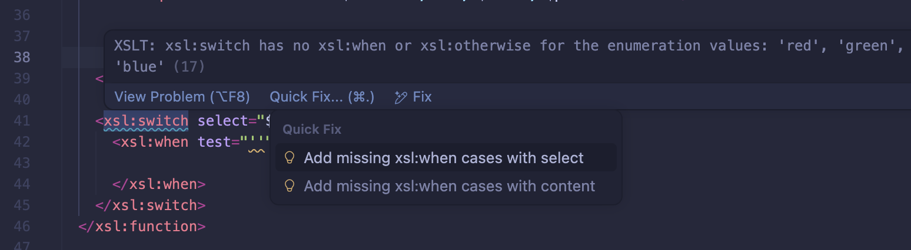
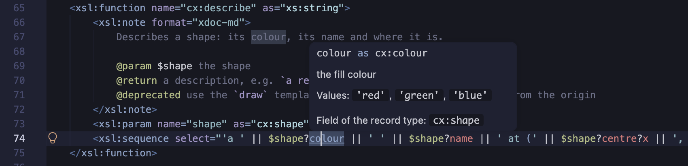
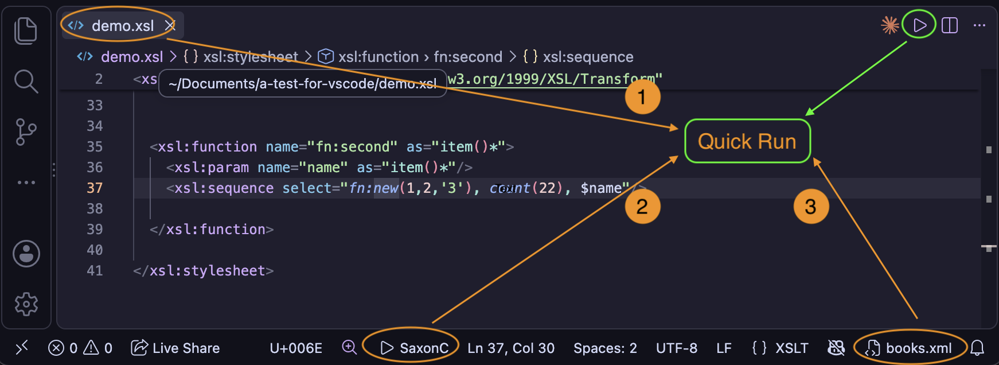
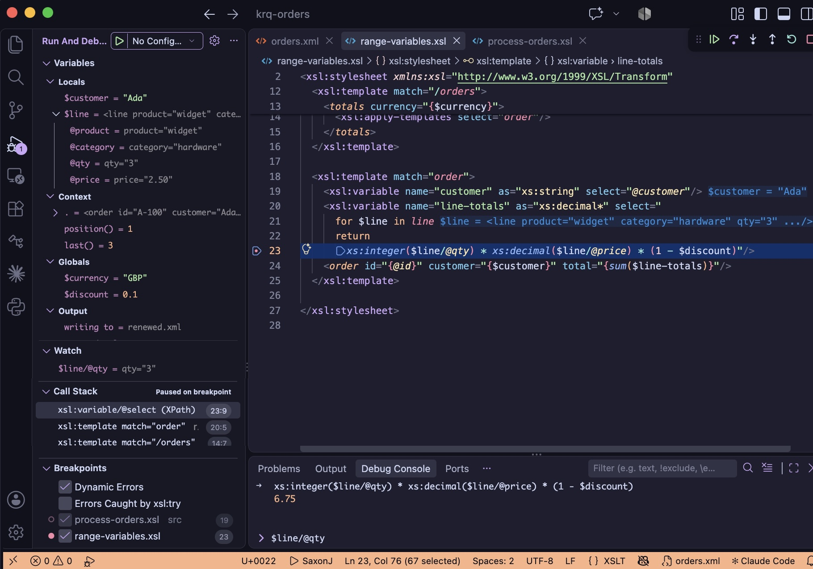
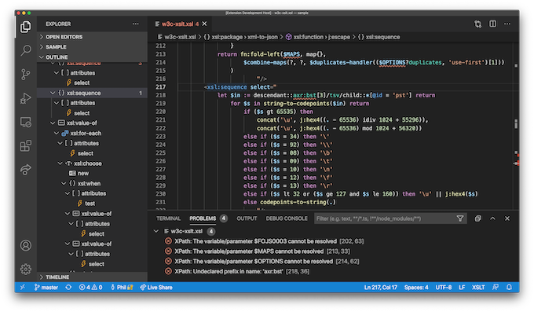
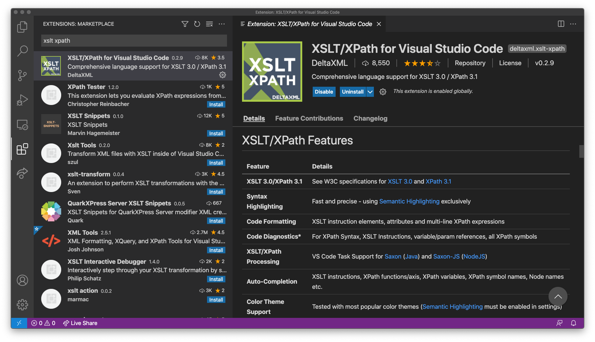

Overview
DeltaXignia's XSLT/XPath extension for Visual Studio Code supports XSLT 3.0 and XPath 3.1, and the XSLT 4.0 and XPath 4.0 features implemented in Saxon 13.
The aim is to make writing, reviewing and debugging XSLT easier. The extension understands each XPath expression - which names are variables, functions or node tests, and where each is declared, including in imported modules - so problems show as you type, and you can go from any name to its declaration, rename it safely, or step through the expression in the debugger.
Getting started
- Install the extension and open an XSLT file - editing, highlighting and checking need no setup.
- To run or debug stylesheets, set
XSLT.tasks.saxonJarto the path of your Saxon jar (Saxon-HE is fine), with a Java runtime on the PATH - see Settings. - Press ⌘⌥R (Ctrl+Alt+R on Windows/Linux) to Quick Run the stylesheet with the XML file you last had open - shown in the status bar, where you can pick another.
Writing XSLT
Problems are reported as you type - in XPath syntax, XSLT instructions, types and function calls, and references to declarations in other modules - many with a quick fix. Auto-completion offers the variables, functions, templates and modes in scope, and node names from the XML file you're working with. See Editing XSLT/XPath.

xsl:switch that doesn't cover an enumeration's values, with quick fixes
to add the missing casesReviewing XSLT
Hovering over a name shows its declaration - its type, and its documentation from an
xsl:note - wherever it's declared. Go to Definition, Find References, the Outline and the
XSLT Imports view help you find your way around a large stylesheet and its modules. See
Code Navigation and Code
Documentation.

Running XSLT
Quick Run runs the stylesheet in the active editor with SaxonJ, SaxonJS or SaxonC. The first run
creates a task in tasks.json, which you can edit - and you're asked for the values of
any required stylesheet parameters. Saxon's errors are listed in the Problems view, linked to the
code. See Quick Run.

Debugging XSLT
The debugger sets breakpoints and steps through templates, functions and multi-line XPath expressions, showing variables, the context item and the output written so far. Where Saxon's standard tracing stops at XSLT instructions, this debugger uses Saxon's own APIs to inject extra trace points and re-parse XPath to locate sub-expressions, so it can stop deep inside multi-line expressions and inline functions. See XSLT Debugger.

Scope
The extension supports the XSLT 4.0 and XPath 4.0 features that Saxon 13 implements. Its checks are made as you type, without compiling the stylesheet - Saxon reports anything else when the stylesheet runs. Schema-aware features aren't supported. The debugger needs SaxonJ 12 or later (any edition); SaxonJS and SaxonC stylesheets can be run, but not debugged.
New to Visual Studio Code?
These pages complement the extensive Visual Studio Code documentation that begins:
Visual Studio Code is a lightweight but powerful source code editor which runs on your desktop and is available for Windows, macOS and Linux. It comes with built-in support for JavaScript, TypeScript and Node.js and has a rich ecosystem of extensions for other languages...

The User Interface
Visual Studio Code's user interface has a different look and feel to that of legacy XSLT editors. The Command Palette, along with keybindings to most common commands, play a significant role in providing a clearer environment to work in. User interface clutter is significantly reduced by eschewing previous designs which depended on a set of toolbars, each with an abundance of buttons.
The application menu bar and associated dropdown menus usefully group the more essential actions for managing your code. The View menu is particularly useful as it logically sets out the large set of view-configuration commands.
The sections below introduce you to the fundamental parts of the user interface from the perspective of an XSLT/XPath developer.
The Command Palette
A principal part of Visual Studio Code's user interface is the Command Palette, triggered by the keyboard shortcut ⇧⌘P. The Command Palette shows all available commands in a dropdown list. The list of commands is filtered as you type. The most recently used commands are shown at the top of the list.
Opening Workspace Files
The File: Open Folder command is used to select the starting 'Workspace' folder to be used by VS Code. More folders can be added to the Workspace subsequently using the Workspaces: Add folder to workspace command. The keyboard shortcut ⌘P provides quick-access to all Workspace files from a pick-list. 'Fuzzy-matching' allows you to type in just a part of the filename to filter the pick-list files.
Keyboard Shortcuts
While the Command Palette provides convenient access to features you should find that keyboard
shortcuts are
more effective for commands you use most
frequently.
The keyboard shortcut for commands is shown alongside each listed command in the Command Palette.
Not all
commands
have key bindings, but these can be configured using the command
Preferences: Open Keyboard Shortcuts
(⌘K⌘S). See:
Key Bindings for Visual Studio Code
Settings
By adding or modifying Visual Studio Settings, using the Preferences: Open User Settings
command,
you can customize a range of editor and extension features to meet your needs.
See the Settings section for details on some of the more important
settings for
developing in XSLT and XPath.
Install the XSLT/XPath Extension
Extensions are managed in the Extensions view (⇧⌘X) of the Side Bar.
Type XSLT XPath in the Extensions view search bar and, on the XSLT/Path for
Visual Studio
Code entry, press the install button
.

Color Theme Extensions
Visual Studio Code includes a small set of light and dark color themes. Alternative color themes are installed as extensions. The number of available themes can be overwhelming, but VS Code has a built-in Theme Preview feature and there are websites like vscodethemes that provide a preview before installing the theme.
The XSLT Dark Themes extension provides a set of popular dark color themes specially enhanced for XSLT and XPath
Other Extensions
Among the hundreds of high quality extensions available for Visual Studio Code, Live Share, for collaborative working, is particularly useful.
Viewing HTML Output
When your XSLT generates HTML, you can view the result in Visual Studio Code's
integrated browser, with no
extension needed. When a transform writes an HTML result file, the notification that the task has completed
has an Open in Browser button, as well as Open for the file's source. You can
also choose Open in Integrated Browser from the editor title bar of an HTML file, or from its
context menu in the Explorer. With the
workbench.browser.autoReloadOnFileChange setting, the page reloads each time the transform
writes the result file again - so you can edit the stylesheet, run it with
Quick Run, and see the updated output alongside the XSLT.
Edit XML, XSLT or XPath
For a comprehensive guide to the Visual Studio Code editor features see the Microsoft Visual Studio Code User Guide.
Language Specific Features
XSLT and XPath specific editing features are described in the Editing XSLT/XPath page of the documentation that your are reading now. More general XML editing features are described in the Editing XML section.
The features described at Editing XSLT/XPath include:
- IntelliSense (Auto Complete)
- Syntax Highlighting
- Code Formatting
- Code Refactoring
- Symbol Renaming
- Hover Help and Signature Help
- XSLT/XPath Linter
Run XSLT - Quick Start
The quickest way to run the stylesheet in the active editor is Quick Run: press ⌘⌥R (Ctrl+Alt+R on Windows/Linux) or click the play button in the editor title bar. The first run creates an XSLT task for you, which later runs reuse.
To step through the stylesheet instead, set a breakpoint and click the debug button in the editor title bar, or press F5 - see the XSLT Debugger.
XSLT transforms are run using Visual Studio Code Tasks.
Before configuring an XSLT task you should ensure that you open a
Workspace folder (⌘O) from Visual Studio Code.
The configuration is saved in a tasks.json file in this workspace folder.
To create your first task, use the Run Build Task command (⇧⌘B).
As there is no currently configured task, you should be prompted to configure one
(if another extension inhibits this, run Configure Task instead). You
can then,
select either the Saxon or Saxon-JS task.
A task will be added to the tasks.json task with default properties. To further
configure the
task, these properties can be changed or other properties added. Auto-completion and hints are
provided to
assist in the task configuration. Next time you press ⇧⌘B your task
will be run
in a Task tab in the Terminal window (toggled with ⌘J).
More on running XSLT
XSLT Tasks are explained in full in the Running XSLT section. More general information can be found in the Visual Studio Code Tasks documentation.